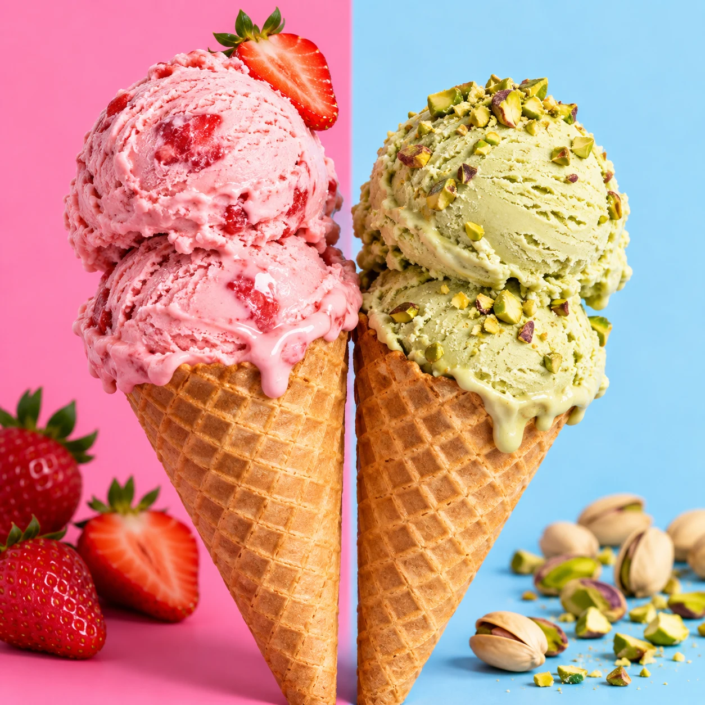
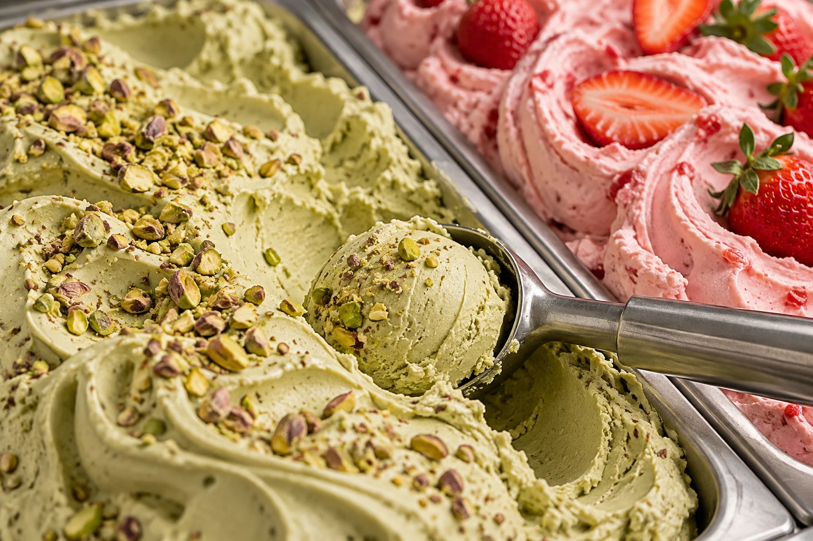

פיסטוק קראש
אגוזי, עמוק ובדיוק במידה.
GOOD DAYS START WITH GELATO.
יש רגעים שלא צריך בשבילם סיבה.
רק טעם שאוהבים, ומישהו לחלוק איתו.


PICK YOUR HAPPY
אגוזי, עמוק ובדיוק במידה.
כמו יום קיץ שלא רוצים שייגמר.
רך, מוכר ותמיד במקום.
3 טעמים
YOUR SCOOP, YOUR RULES.
בחרו עד שלושה טעמים מהקולקציה
ותרכיבו את השילוב שלכם.
הגביע שלכם מחכה לטעם הראשון.
BUILD YOUR HAPPY
שלושה כדורים, אפס כללים. לחצו על טעם ותראו אותו נוחת.
LITTLE MOMENTS. BIG HAPPY.
השמש יוצאת. הגביע מתמלא. מישהו גונב טעימה.
לא צריך יותר מזה כדי להפוך יום רגיל ליום קצת יותר טוב.